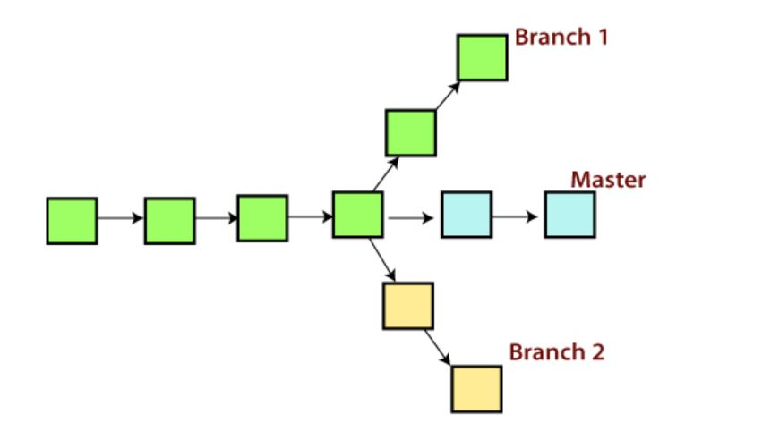

A branch is a version of the repository that diverges from the main working project. It is a feature available in most modern version control systems. A Git project can have more than one branch. These branches are pointer to a snapshot of your changes. When you want to add a new feature or fix a bug, you spawn a new branch to summarize your changes. So, it is complex to merge the unstable code with the main code base and also facilitates you to clean up your future history before merging with the main branch. Git Master Branch
The master branch is a default branch in Git. It is instantiated when first commit made on the project. When you make the first commit, you're given a master branch to the starting commit point. When you start making a commit, then master branch pointer automatically moves forward. A repository can have only one master branch. Master branch is the branch in which all the changes eventually get merged back. It can be called as an official working verison of your project.Some points to remember:-
1. Each task has one separate Branch. 2. After done with the code, merge other branches with master. 3. This concept is useful for parallel development. 4. You can create any number of branches. 5. Changes are personal to that particular branch. 6. Default Branch is master. 7. Files created in workspace will be visible in any of the branch workspace untill you commit. Once you commit, then that files belongs to that particular branch. 8. When created new Branch, data of the existing branch will be copied to new branch.Operations on Branches:-
To create Branch - $ git branch branch_name To List Branch - $ git branch --list or $ git branch To delete Branch - $ git branch -d branch_name or $ git branch -D branch_name To switch Branch - $ git checkout branch_name To rename Branch - $ git checkout -n old_branch_name new_branch_name